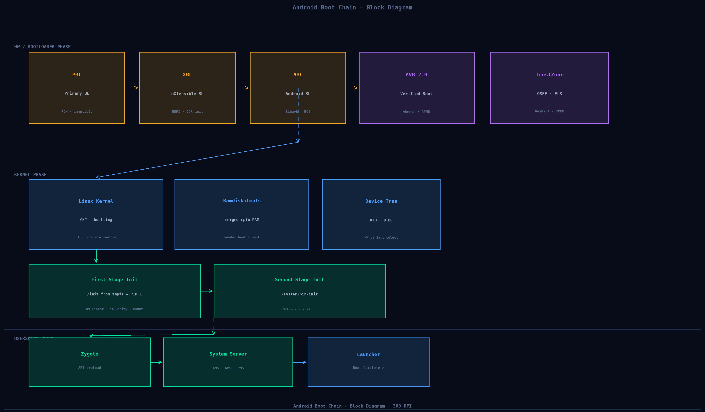
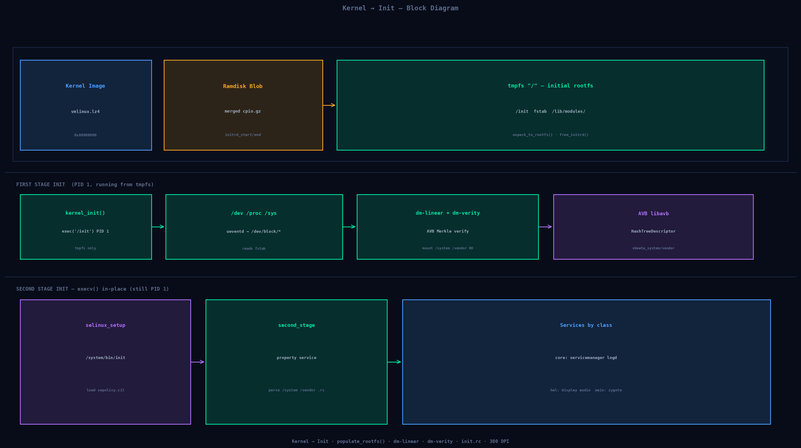
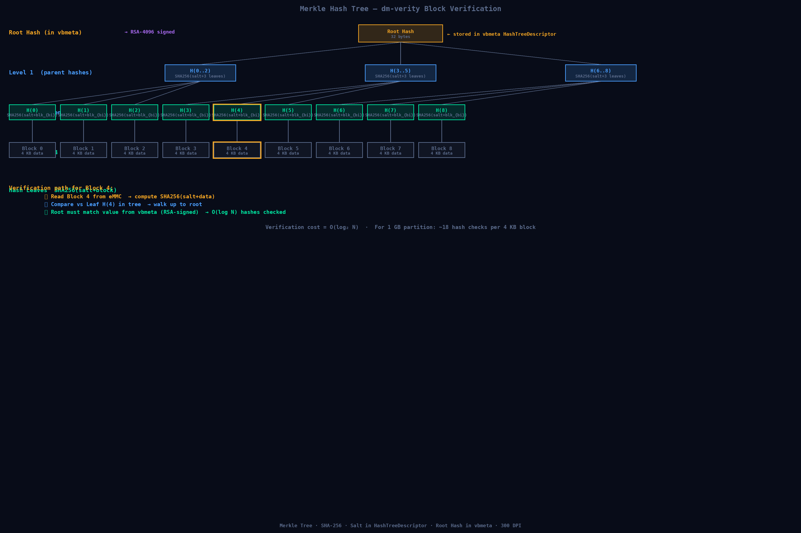
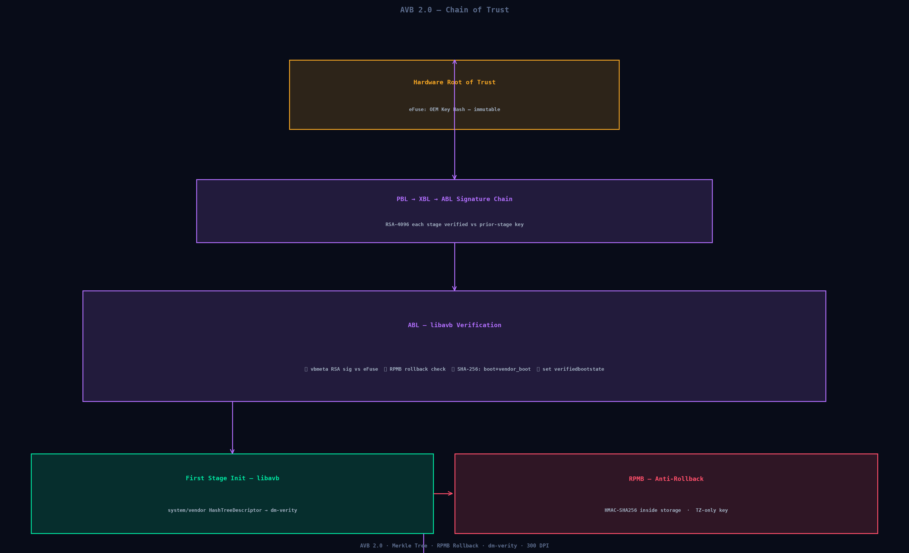
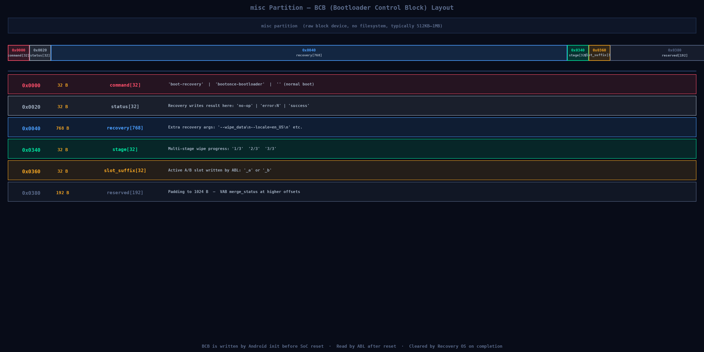
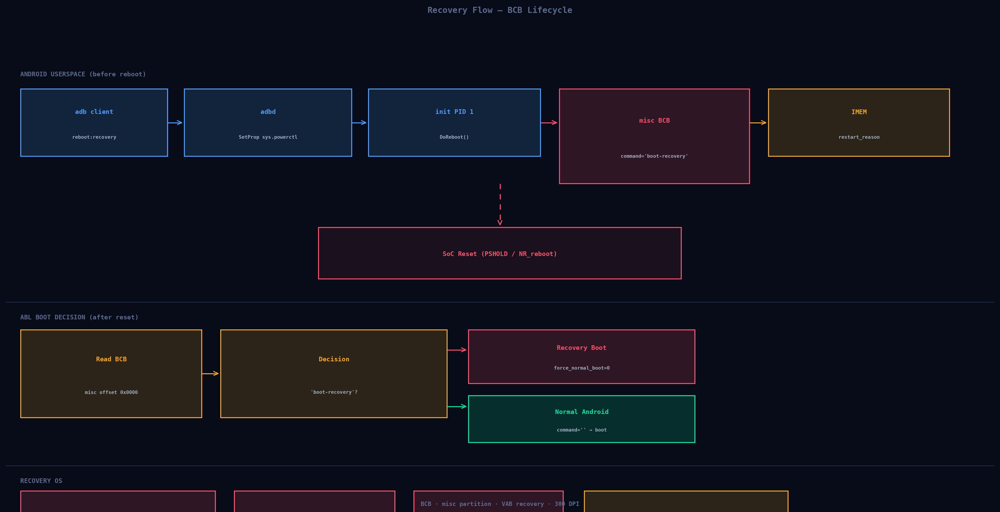
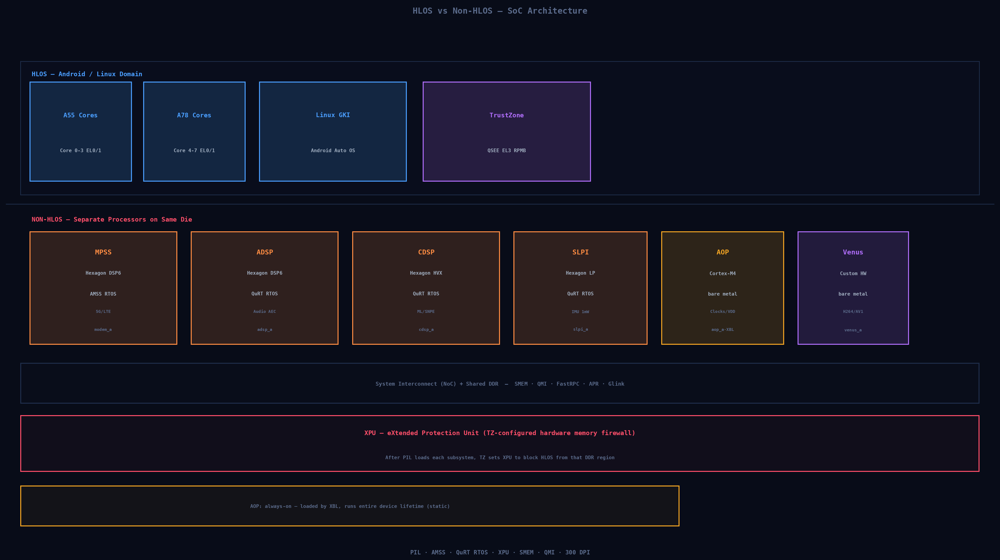

On an Android Automotive device boot is a verified handoff chain across eight stages. Each stage cryptographically authenticates the next before transferring execution. A failure at any stage halts the device in a safe state.
Think of boot like a relay race — each runner can only start after receiving the baton (authentication signature) from the previous one.

Fig 1.1 — Click or Tab+Enter any block for a summary and expandable deep dive. Amber=bootloader · Blue=kernel · Purple=secure world. Download PNG (300 DPI)
Fig 1.2 — Each arrow is a verify-then-load handoff. PID 1 is preserved through all three execv transitions in init.
CPU reset vector in ROM. eFuse OEM key hash authenticates XBL. Hardware root of trust established.
DDR, clocks, regulators. Loads TrustZone (EL3) and AOP firmware before handing off to ABL.
Reads BCB from misc, checks RPMB rollback index via TrustZone SMC, runs libavb, merges ramdisks.
populate_rootfs() decompresses merged cpio into tmpfs. No eMMC filesystem access yet.
dm-linear from LpMetadata, dm-verity from AVB hash tree. Mounts /system /vendor /odm read-only.
SELinux loaded. .rc files parsed. Vendor .ko modules via modprobe. class core → hal → main.
ART preloaded. AMS, WMS, PMS started. BOOT_COMPLETED broadcast.
All HALs operational. Camera pipeline must be live within 2 s of ignition on automotive builds.
The kernel never accesses /system to find /init. It executes /init from RAM-only tmpfs built from the merged cpio ramdisk ABL loaded into DDR. First stage init is what mounts /system.
When the kernel first runs /init, the /system partition does not exist yet. It comes from tmpfs in RAM.

Fig 2.1 — Ramdisk cpio extracted into RAM tmpfs. /init (PID 1) mounts real partitions via dm-linear and dm-verity. Two execv transitions keep PID 1 stable throughout.
Every block read from /system or /vendor flows through two kernel device-mapper layers before reaching the VFS. The pipeline below is interactive — hover any layer to highlight it.
system_a_veritysystem_a/dev/block/by-name/superAll logical partitions (system, vendor, odm …) live inside one physical block device. It has no filesystem — a fixed-offset LpMetadata header at offset 0x1000 describes the partition table.
adb shell lpdump /dev/block/by-name/super
# Metadata slot 0, version 10.2
# Partition: system_a Size: 1024 MiB
# Extents: 0..2097151 linear super 2048
# Partition: vendor_a Size: 512 MiB
# Extents: 0..1048575 linear super 2099200First stage init reads LpMetadata from /dev/block/by-name/super via the liblp library. It contains an array of LpMetadataPartition structs, each pointing to one or more LpMetadataExtent records defining physical sectors.
struct LpMetadataPartition {
char name[36]; // "system_a"
uint32 attributes; // READONLY | UPDATED
uint32 first_extent; // index into extent array
uint32 num_extents;
};
struct LpMetadataExtent {
uint64 num_sectors; // logical sector count
uint64 target_data; // physical sector offset in super
};dm-linear creates a device-mapper target that translates each logical sector to a physical sector in super based on the extent table. No data is copied — it is a pure address translation in the kernel block layer.
# dmsetup table entry for system_a:
# start sectors target device phys_offset
# 0 2097152 linear 259:1 2048
adb shell dmsetup table
adb shell ls /dev/block/mapper/
# → system_a vendor_a odm_a product_a …
# fstab.qcom tells init what to mount:
# /dev/block/mapper/system_a /system erofs ro,barrier=1 wait,avb=vbmeta_systemInit wraps the dm-linear device with a dm-verity target. Every 4 KB block read computes SHA-256(salt + data) and walks the Merkle tree to the root hash stored in vbmeta. If any hash mismatches, the kernel either uses Reed-Solomon FEC (Forward Error Correction) or panics with dm-verity: device corrupted.
# dm-verity table entry:
# 0 2097152 verity 1 \
# /dev/block/mapper/system_a \ <-- data device
# /dev/block/mapper/system_a \ <-- hash device (tree appended)
# 4096 4096 262144 262144 \ <-- block/hash sizes
# sha256 <root_hash> <salt> 2 <fec_roots>
adb shell dmsetup status system_a_verity
# → 0 2097152 verity V/V (V=Verified, C=Corrupt)
adb shell getprop ro.boot.verifiedbootstate # → greenThe hash tree is appended after data blocks in the partition. Each leaf = SHA-256(salt + 4 KB block). Parent nodes hash 128 children (128 × 32 B = one 4 KB block). Only log₂(N) hashes need checking per block read.

Fig 2.2 — Root hash lives in vbmeta (RSA-4096 signed). Verifying one block requires only O(log N) hash checks.
function build_hash_tree(blocks, salt):
leaves = [SHA256(salt + blk) for blk in blocks]
while len(leaves) % 128: leaves.append(b'\x00'*32)
tree=[leaves]; cur=leaves
while len(cur)>1:
nxt=[SHA256(salt+b''.join(cur[i:i+128])) for i in range(0,len(cur),128)]
tree.insert(0,nxt); cur=nxt
return cur[0], tree # root_hash + tree# Kernel log — corruption detected:
# [42.18] dm-verity: system_a: data block 12345 is corrupted
# [42.19] Kernel panic - not syncing: dm-verity: device corrupted
# Debug commands:
adb shell dmesg | grep "dm-verity"
adb shell getprop ro.boot.verifymode # → enforcing
adb shell getprop ro.boot.verifiedbootstate # → green
adb shell mount | grep system
# /dev/block/mapper/system_a_verity on /system type erofs (ro)
# Debug/userdebug builds only:
adb root && adb disable-verity && adb reboot
adb root && adb remountA dm-verity panic while driving must trigger a hardware-rendered safe state on a separate MCU before the reboot cycle completes — this is a functional-safety design constraint.
Fig 2.3 — Full populate_rootfs() sequence including dm-linear creation, AVB Merkle verify, and two execv transitions maintaining PID 1.
Second stage init parses .rc files from /system/etc/init/, /vendor/etc/init/, and /odm/etc/init/. Services start in class order: core → hal → main. class hal always starts before class main so all HALs are registered before any app opens them.
on early-init
start ueventd # class core — creates /dev nodes
mount cgroup2 none /sys/fs/cgroup nodev noexec nosuidon init
mount_all /vendor/etc/fstab.qcom --early # persist + metadata
setprop ro.hardware.gralloc msmservice servicemanager /system/bin/servicemanager
class core animation
user system; group system readproc
critical # 4 deaths in 4 min → device reboot
onrestart restart zygote
service logd /system/bin/logd
class core
socket logd stream 0666 logd logdservice vendor.qti.display-hal /vendor/bin/hw/android.hardware.graphics.composer3-service.qti
class hal
user system; group graphics drmrpc
onrestart restart surfaceflinger
service vendor.audio-hal /vendor/bin/hw/android.hardware.audio.service
class hal; user audioserver; group audio cameraservice zygote /system/bin/app_process64 -Xzygote /system/bin --zygote --start-system-server
class main; priority -20; user root
socket zygote stream 660 root system
# Debug — all service states:
adb shell getprop | grep "init.svc"
# init.svc.zygote=running init.svc.logd=running
# Watch class_start events live:
adb shell logcat | grep -E "class_start|ServiceManager|Zygote"
# Full ps listing after boot:
adb shell ps -A | grep -E "servicemanager|zygote|system_server"
# Check cmdline (slot, verifiedbootstate, etc.):
adb shell cat /proc/cmdlineFig 2.4 — class hal must start before class main. servicemanager must start before any HAL (HALs register with it). This ordering is guaranteed by the class dependency system in init.
AVB provides a layered cryptographic chain of trust from immutable hardware fuses to per-block runtime verification. Every layer verifies the next; a break at any point prevents a green-state boot.

Fig 3.1 — eFuse is the immutable root. RPMB prevents rollback. dm-verity provides continuous runtime verification. Chain partition descriptors allow Google and the SoC vendor to manage their own signing keys independently.
Fig 3.2 — Merkle tree built from data blocks. Root hash stored in vbmeta (RSA-4096 signed). Verifying one block requires only O(log₂ N) hash comparisons — approximately 18 for a 1 GB partition.
Fig 3.3 — boot/vendor_boot use full upfront SHA-256 (small partitions). system/vendor use lazy Merkle tree verification per block read at runtime (too large for full upfront hash).
ABL runs libavb which performs this sequence for every boot:
# Step 1: Load vbmeta from partition
vbmeta_bytes = read_partition("vbmeta")
# Step 2: Verify RSA-4096 signature against eFuse OEM key
oem_key_hash = read_efuse(OEM_KEY_HASH_REGISTER)
if SHA256(vbmeta.auth_block.pubkey) != oem_key_hash:
return AVB_SLOT_VERIFY_RESULT_ERROR_PUBLIC_KEY_REJECTED
# Step 3: Check RPMB rollback index (via TrustZone SMC)
stored_idx = tz_smc_read_rpmb_rollback_index(slot=0)
if vbmeta.rollback_index < stored_idx:
return AVB_SLOT_VERIFY_RESULT_ERROR_ROLLBACK_INDEX
# Step 4: Hash verify boot + vendor_boot (full partitions)
for desc in vbmeta.hash_descriptors:
actual = SHA256(read_partition(desc.partition_name))
if actual != desc.digest: return ERROR_HASH_MISMATCH
# Step 5: Set kernel cmdline for init to read
append_cmdline(f"androidboot.verifiedbootstate=green")
append_cmdline(f"androidboot.vbmeta.hash_alg=sha256")
# Step 6: Post-boot — update RPMB permanently (monotonic!)
if vbmeta.rollback_index > stored_idx:
tz_smc_write_rpmb_rollback_index(slot=0, new=vbmeta.rollback_index)A vbmeta image is ~64 KB: an authentication block (RSA signature + SHA-256 of aux block) and an auxiliary block (OEM public key + descriptor array).
adb shell dd if=/dev/block/by-name/vbmeta of=/tmp/vbmeta.img bs=65536 count=1
adb pull /tmp/vbmeta.img
avbtool info_image --image vbmeta.img
# VBMeta image version: 1.3
# Public key (sha1): 2c40b2c7...
# Rollback Index: 42
# Descriptors:
# Hash descriptor:
# Image Name: boot
# Hash Algorithm: sha256
# Digest: a3b4c5d6...
# HashTree descriptor:
# Image Name: system
# Tree Offset: 1073741824
# Root Digest: 7e8f9a0b...
# FEC num roots: 2
# Chain Partition descriptor:
# Partition Name: vbmeta_system
# Rollback Index Location: 1
# Public key (sha1): 3d4e5f60...avbtool make_vbmeta_image \
--output vbmeta.img \
--key oem_private_key.pem --algorithm SHA256_RSA4096 \
--rollback_index 42 \
--include_descriptors_from_image boot.img \
--chain_partition vbmeta_system:1:google_pubkey.bin \
--chain_partition vbmeta_vendor:2:vendor_pubkey.bin
avbtool verify_image --image system.img
# Verification OK. Hash tree offset: 1073741824
# On device — check AVB state:
fastboot getvar verified-boot-state # → green
fastboot getvar unlocked # → no| State | Condition | dm-verity | Warning |
|---|---|---|---|
| 🟢 GREEN | Valid sig, locked BL, rollback OK | Enforced | None |
| 🟡 YELLOW | Custom OEM key, locked BL | Enforced | 10 s splash |
| 🟠 ORANGE | Bootloader unlocked | Disabled | 10 s splash |
| 🔴 RED | Signature mismatch / hash failure | N/A | Refuses boot |
When you run adb reboot recovery, Android writes the BCB (Bootloader Control Block) to the misc partition before a SoC reset. BCB persists in flash while RAM is zeroed on reset — it is the only reliable communication channel between Android and the bootloader across a power cycle.

Fig 4.1 — BCB occupies the first 1024 bytes of misc. The command field at offset 0x0000 drives the bootloader's boot decision. Recovery clears it on completion.
# Read command field (first 32 bytes)
adb shell dd if=/dev/block/by-name/misc bs=1 count=32 2>/dev/null | strings
# Normal: (empty) Recovery: boot-recovery
# Read recovery args field (bytes 64–831)
adb shell dd if=/dev/block/by-name/misc bs=1 skip=64 count=768 2>/dev/null | strings
# Manually trigger recovery (root required):
adb root
echo -n 'boot-recovery' | adb shell dd of=/dev/block/by-name/misc bs=1 count=14
adb reboot
# Post-recovery — verify BCB was cleared:
adb shell dd if=/dev/block/by-name/misc bs=1 count=32 2>/dev/null | hexdump | head
# Should be all zeros: 00000000 00 00 00 00 …
Fig 4.2 — BCB is written before the SoC reset and read by the bootloader after reset. Recovery OS clears the BCB command field on completion.
Fig 4.3 — On Android 11+ (VAB), the recovery OS runs using the same kernel as normal Android. The bootloader adds androidboot.force_normal_boot=0 to the kernel command line to signal recovery mode.
On VAB (Android 11+), the recovery binary lives at /system/bin/recovery and is exec'd by first stage init. It runs with no Android framework — no Binder, no Zygote, no system services. RecoveryUI writes directly to the framebuffer.
# 1. OTA package installation
# - Verifies package signature via /system/etc/security/otacerts.zip
# - Runs update_binary (update_engine_sideload) inside the OTA zip
# - Verifies block hashes per update_metadata.pb
# 2. Factory reset (--wipe_data)
# - Formats /data (mke2fs or erase_blk)
# - Explicitly SKIPS /mnt/vendor/persist and FRP partition
# - Clears /metadata/ota/ (VAB snapshot state)
# 3. ADB sideload — minimal adbd in sideload-only mode
adb reboot sideload
adb sideload ota_package.zip
# 4. RecoveryUI — direct framebuffer drawing (no SurfaceFlinger)# Accessible at /data/misc/recovery/last_log after reboot:
adb shell cat /data/misc/recovery/last_log
# Sample output:
I/A:system/bin/recovery: Starting recovery (pid 1) on Thu Mar 19 08:30:00 2026
I/A: BCB command: boot-recovery
I/A: BCB recovery: --wipe_data\n
I/A: Wiping data...
I/A: Formatting /dev/block/by-name/userdata
I/A: mke2fs -t ext4 /dev/block/by-name/userdata
I/A: Format succeeded.
I/A: Writing BCB status=success command=
I/A: Reboot requested: reboot,
I/A: Rebooting with target ''
# Check OTA installation log:
adb shell cat /data/misc/recovery/last_installA modern automotive SoC contains 8–10 independent processors on one die. Android/Linux (HLOS) is one of them. The others are NON-HLOS subsystems with hard real-time requirements that Linux cannot satisfy.

Fig 5.1 — TrustZone shares ARM Cortex-A cores with HLOS at EL3. All NON-HLOS processors are physically separate cores. XPU hardware enforces DDR isolation after PIL loading.
Fig 5.2 — TrustZone and AOP are loaded by XBL before Linux. MPSS/ADSP/CDSP are loaded by Linux PIL, authenticated by TrustZone via SMC calls. XPU prevents the Linux kernel from reading/writing subsystem DDR.
5G NR / 4G LTE protocol stack. 1 ms subframe timing impossible in Linux. FCC mandates isolation from user code.
Audio encode/decode, AEC, always-on voice detection at ~1 mW. Enables wake-word while AP cores are in deep sleep.
ML inference via SNPE/QNN. Driver Monitoring, occupant detection, ADAS classification.
IMU, gyroscope, accelerometer always-on at 1 mW. Critical for automotive dynamics and sensor fusion.
Clock and voltage arbiter for the entire SoC. Always-on — manages sleep/wake for all processors. Handles ignition wakeup in automotive.
AOP starts before Linux and runs for the device's entire lifetime. No runtime loading phase to show.
RPMB key custodian. KeyMint (Android Keystore), Widevine DRM L1, HDCP 2.x, biometric template matching. Unreachable from kernel bugs.
| Attribute | HLOS (Android) | NON-HLOS (Subsystems) |
|---|---|---|
| Processor | ARM Cortex-A | Hexagon QDSP6 / ARM-M4 / ARM EL3 |
| OS | Linux + Android | AMSS / QuRT RTOS / bare metal |
| Real-time? | Soft RT only | Hard RT — μs precision |
| Loaded by | ABL → kernel exec chain | XBL (TZ/AOP) or Linux PIL |
| Memory protection | MMU / page tables | XPU (hardware, TZ-configured) |
| IPC with HLOS | Binder / AIDL | QMI / FastRPC / APR / Glink / SMEM |
| Crash recovery | Watchdog → reboot | SSR (Subsystem Restart) → PIL reload |
adb shell cat /sys/bus/msm_subsys/devices/subsys0/name # → modem
adb shell cat /sys/bus/msm_subsys/devices/subsys0/state # → ONLINE
adb shell dmesg | grep -E "PIL|MPSS|ADSP|remoteproc|subsys"
adb shell ls /dev/socket/qmux_radio/ # modem QMI endpointsEvery Android partition has a specific owner, purpose, and lifecycle. The animated map shows access order by boot stage. Click any card for details including debug commands.
execv() replaces the process image in-place — the PID stays the same but the binary changes. Android uses this three times: kernel → first-stage, first-stage → selinux_setup, selinux_setup → second_stage. PID 1 must remain stable because the kernel delivers SIGCHLD for all orphaned processes to it. Traditional Linux uses switch_root instead; Android avoids it to preserve the process tree.
No. dm-verity is fundamentally incompatible with writes. Every block write changes its SHA-256, so the next read fails hash verification. On production builds /system is always MS_RDONLY. On userdebug/eng builds: adb root && adb disable-verity && adb reboot or adb root && adb remount disables verity for the session.
vendor_dlkm contains SoC vendor-owned, vendor-signed hardware driver .ko files (display, audio DSP, GPU, camera, CAN bus). Verified by vbmeta_vendor. system_dlkm contains Google-owned, Google-signed GKI extension modules (fuse.ko, incremental_fs.ko, dm_user.ko). Verified by vbmeta_system. The split allows each party to update their modules independently via the GKI KMI contract without the other needing to rebuild.
persist stores per-device factory-measured calibration: WiFi RF offsets, BT NV items, display colour LUT, gyroscope zero-offsets. This is measured on each unit using specialised factory test equipment. Wiping it is catastrophic: WiFi may violate RF regulations, display colours are wrong, sensors drift. Recovery explicitly skips persist. Restoring it requires returning the device to factory calibration equipment.
Before GKI, each OEM shipped a monolithic kernel with vendor drivers compiled in. A CVE patch required: Google patch → vendor backport → OEM integrate → full regression → OTA (6–12 months). GKI splits the kernel into: (1) a GKI core in boot, maintained by Google with a stable KMI, and (2) vendor modules in vendor_dlkm compiled by the SoC vendor against the stable KMI. Because KMI is stable, Google can patch the kernel in days without the vendor recompiling .ko files.
HIDL (HAL Interface Definition Language) was introduced in Android 8 (Treble). It uses a separate Binder domain (hwbinder) and is declared in .hal files compiled by hidl-gen. AIDL was extended to support vendor HALs in Android 11 and became the preferred HAL mechanism from Android 12 onward. AIDL uses the same Binder as the rest of Android and supports in-process HALs. New HALs should use AIDL; existing HIDL HALs are deprecated but still functional.
Traditional A/B duplicates every partition physically — system_a and system_b both exist full-size simultaneously, doubling storage cost. Virtual A/B (Android 11+) uses dm-snapshot to store only the delta of the new slot during OTA: system_b is a copy-on-write overlay of system_a, stored in userdata via the /metadata/ota/ state machine. After the next reboot the snapshot merges into the real partition. This eliminates the storage doubling cost while preserving atomic OTA semantics.
dd if=/dev/block/by-name/misc bs=1 count=32 | strings. Stale "boot-recovery" = failed OTA. Try fastboot --skip-reboot flashall.adb root; adb disable-verity; adb reboot. Never on production.adb shell getprop init.svc.<service_name>. If stopped, check adb logcat | grep <service>. Likely missing .ko — check dmesg | grep modprobe.avbtool info_image --image vbmeta.img — OEM key in eFuse must match vbmeta signing key.adb shell cat /sys/bus/msm_subsys/devices/subsys0/state. If OFFLINE: dmesg | grep -E "PIL|MPSS|subsys". Persistent SSR marks the slot unbootable — bootloader reverts to the other slot.dd if=/dev/block/by-name/persist of=/sdcard/persist.img. Factory calibration escalation required.fastboot flash vbmeta vbmeta.img. If super is corrupt: fastboot wipe-super super_empty.img then reflash logical partitions.{kind=link}
{kind=link}
{kind=link}
{kind=link}
{kind=link}
{kind=link}
{kind=link}
{kind=link}
{kind=link}